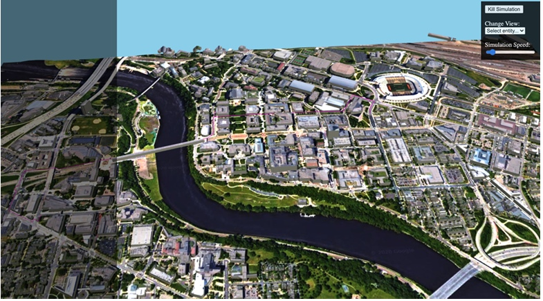

Highlighted Technical Skills and Design Aspects
- Algorithm Design and Comparison: designed and compared the Dijkstra and ant algorithms.
- Mathematical Modeling: established a mathematical model of path optimization.
- Environment Analysis and Modeling:analyzed the drone flight environment and established an environment model based on the Voronoi diagram.
- Experimental Design: using real map data and creating control groups to test the algorithms.
- Web Server Visualization: visualized the results through a web server creating a map of the school area.
Abstract
In this project, I explored two different methods of using drones for package delivery: the refueling point model and the vehicle-drone composite delivery model. I focused on the latter, where I designed and compared different algorithms to find the most efficient route for drone deliveries. Through various scenarios, I found that while both the informed and uninformed algorithms have their pros and cons, the ant algorithm generally offers wider applicability.

Introduction
Online shopping has become a part of our daily lives, and it is supported by numerous algorithms that help in the delivery process, replacing human effort to a large extent. In this research, I delved into finding the most efficient algorithm for drone package delivery, a futuristic approach to solving the common vehicle routing problem. This problem involves determining the best routes for a set number of vehicles to deliver or collect packages, aiming to save time and effort. I explored different heuristic algorithms to find approximate optimal solutions for this problem, setting the stage for drone package delivery solutions.
Existing Solutions
-
Refueling Point Model
In the early stages of drone delivery development, researchers focused on how to extend the drone's coverage area and efficiency by establishing suitable refueling points. This approach involved creating mobile refueling methods and optimizing the location of these points to enhance the drone's continuous support capability. The researchers also looked into coordinating multiple drone distribution tasks and optimizing task allocation during emergency supply deliveries in disaster relief scenarios. -
Vehicle-Drone Joint Delivery Model
A more recent approach involves combining drones with traditional delivery vehicles, using the latter as mobile drone bases. This model has been defined and explored through various problems and algorithms, aiming to find the most efficient solutions for different delivery scenarios. The researchers have developed heuristic algorithms, dynamic programming methods, and even genetic algorithms to solve complex task allocation problems in this model, focusing on minimizing delivery time and costs.
My Solution
In my project, I chose to work with the vehicle-drone joint delivery model. I assumed that all packages to be delivered are already at the package center in each city. The drones either pick up packages from customers and drop them at these centers or are scheduled to deliver packages from the centers to customers. My focus was on finding the shortest drone delivery path within a city, disregarding inter-city routes. I adopted two main algorithms for this: the Dijkstra algorithm, which follows a greedy strategy to find the shortest path between points, and the ant algorithm, which uses a path optimization model to find the best route through a series of iterative steps.
Approach Description
Dijkstra Algorithm
This algorithm operates on a principle of finding the shortest path from a starting point to various vertices in a graph. Initially, it assigns a path weight of zero to the origin and sets distances to other reachable vertices accordingly. The algorithm iteratively finds the shortest path to various points by comparing distances and updating them if a shorter path is found through a newly added vertex. Despite its efficiency in finding the shortest paths, it doesn't consider other costs and environmental changes.
Ant Algorithm
In contrast, the ant algorithm is designed to find an optimal path through a series of iterative steps that involve establishing a mathematical model of path optimization. This approach involves analyzing the drone flight environment and establishing an environment model based on the Voronoi diagram. The algorithm calculates the costs associated with various paths considering different threat levels and other parameters. It then uses an ant colony algorithm to plan the initial path for drones, considering pheromone concentrations and heuristic information on different paths. The algorithm undergoes several iterations to find the shortest path, with a provision for smoothing the initial path to achieve coordination.
Experiment Design
For the experiment, I used map data of the Minneapolis and Saint Paul campuses of the University of Minnesota, dividing them into two control groups to represent different delivery distances. I kept the customer and package information constant to maintain the credibility of the experiment and ran each algorithm three times to find an average answer. The performance of the algorithms was measured based on their running time and the length of the path they found, with the results visualized through a web server creating a map of the school area.
Analysis
In this section, I analyzed the results obtained from the experiments conducted using the Dijkstra and ant algorithms. I observed that the Dijkstra algorithm generally found shorter paths compared to the ant algorithm. However, the ant algorithm was more efficient in terms of running time, showcasing its potential in real-time applications where quick decisions are essential.
I also noted that the ant algorithm could find paths that avoid high-threat areas, making it a safer option for drone deliveries. This algorithm also showed a high degree of adaptability, adjusting to changes in the environment more effectively than the Dijkstra algorithm.
Conclusion/Summary and Future Work
In conclusion, my research project brought to light the potential of using drones for package delivery, focusing on finding the most efficient routes within a city. Through a detailed study of the Dijkstra and ant algorithms, I found that while the Dijkstra algorithm can find shorter paths, the ant algorithm stands out in terms of safety and adaptability, offering a promising avenue for future developments in drone delivery systems.
Looking ahead, I plan to further refine the ant algorithm to enhance its efficiency and to explore the integration of other heuristic algorithms to find even more optimal solutions. I also envision expanding this research to include inter-city routes, aiming to build a more comprehensive drone delivery network that can revolutionize the logistics and delivery industry.